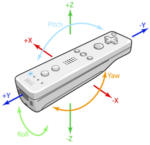

Mando de la Wii y nomenclatura ejes
- Título: "Fricadas con el Wii Remote"
- Ponente: Andrés Prieto-Moreno
- Duración: 1 hora (teoría+demostraciones)
- Evento y Lugar: CampusBot en Campus Party 2008. Valencia.
- Fecha: 29-Julio-2008
Resumen
En esta charla se ha querido mostrar como manejar el mando de la Wii desde un PC mediante su conexión Bluetooth con el sistema operativo Windows XP. La aplicación final ha sido mostrar como mover un robot con el mando de la Wii.
Descarga
| Fichero | Descripción |
|---|---|
| Conferencia sobre "Frikadas con la Wii" | Presentación en formato PDF |
Licencia
| |
Vídeos
Algunos de los vídeos que se mostraron en la presentación:
Información adicional
- Aplicación friki I: Movimiento de un servo con el mando de la wii.
- Aplicación friki II: Moviendo un Skybot con el mando de la wii
- Aplicacion friki III: Moviendo un Skybot con la Wii-board
- Descarga del Wiinremote 1.13 Programa en Delphi para probar el mando de la Wii. Representa las aceleraciones de forma gráfica.
- WiiLi.org
- Notas software para windows
- Johnny Chung Lee Creador de aplicaciones divertidas para C#
Agradecimientos
- A Isidro Ruiz por prestarme su mando de la Wii para poder dar la conferencia.